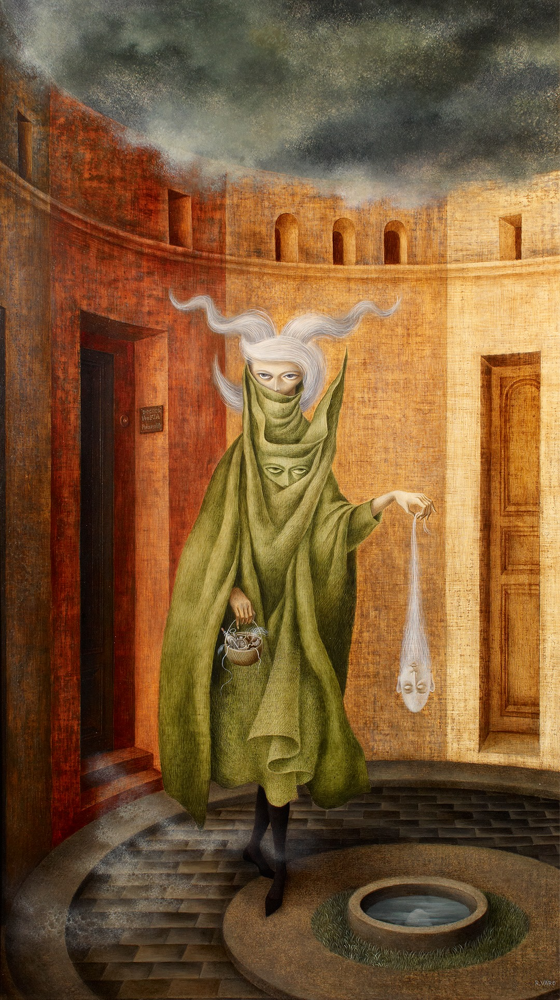
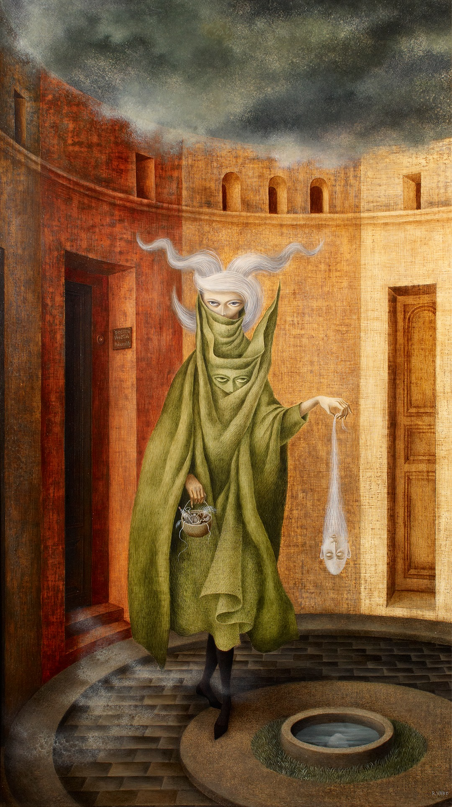

Remedios Varo
María de los Remedios Alicia Rodriga Varo y Uranga (1908-1963) fue una pintora surrealista española que desarrolló la mayor parte de su carrera en México, donde creó un universo pictórico propio cargado de símbolos, ciencia, alquimia y sueños. Remedios Varo nació en Anglès, Girona, en 1908, en una familia que estimuló desde temprano su talento artístico. Estudió en la Real Academia de Bellas Artes de San Fernando, en Madrid, y más tarde se trasladó a París, donde entró en contacto con el surrealismo y con artistas como André Breton y Benjamin Péret. Durante la Segunda Guerra Mundial se exilió en México, país que la adoptó y en el que encontró un círculo creativo junto a Leonora Carrington y Kati Horna. Su obra, de atmósferas oníricas y personajes misteriosos, combina lo racional con lo mágico, lo científico con lo espiritual. Entre sus obras más destacadas se encuentran La creación de las aves (1957), Papilla estelar (1958) y Mujer saliendo del psicoanalista (1960). Falleció en Ciudad de México en 1963, a los 54 años, dejando un legado que hoy la ubica como una de las artistas surrealistas más importantes del siglo XX.
"No deseo hablar de mí misma porque tengo la profunda convicción de que lo importante es la obra, no la persona."
Galería de Obras
 
